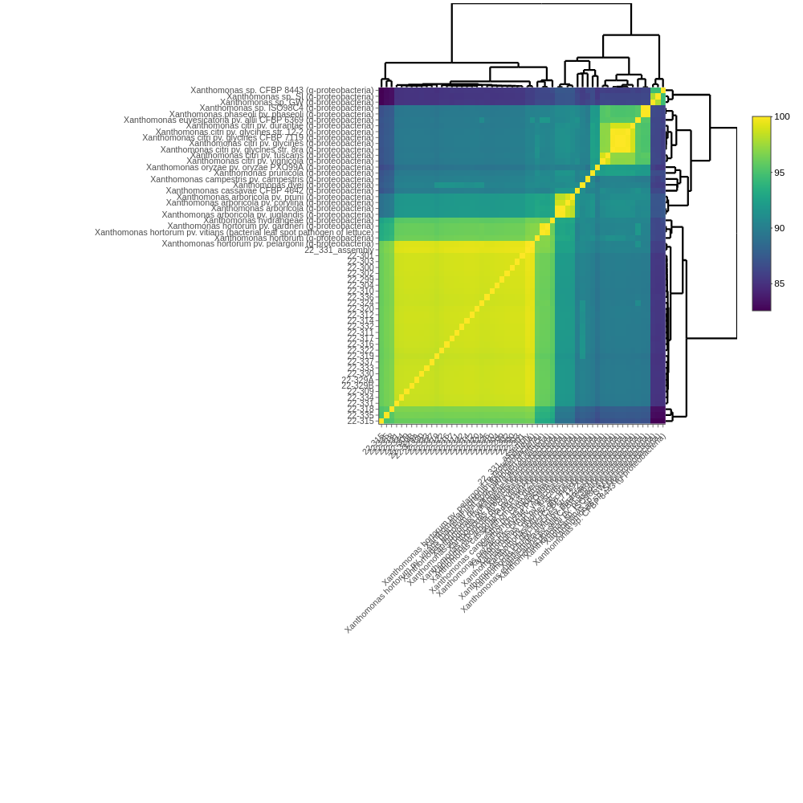
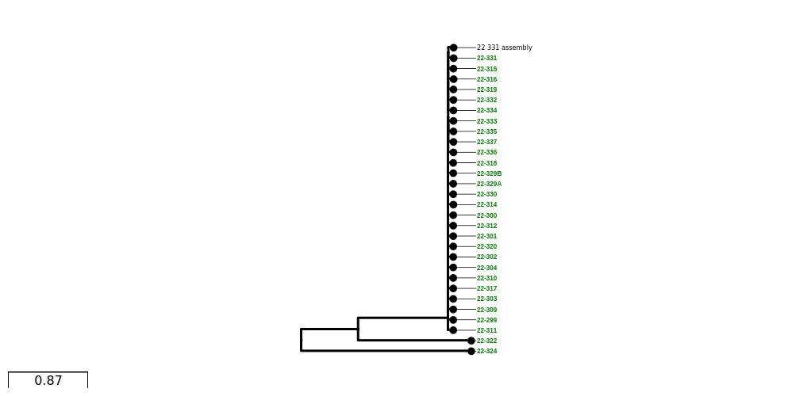

| sample_id | shortread_1 | shortread_2 | reference | reference_id | report_group | color_by | date_isolated | date_received | year | host | cv_key | nursery |
|---|---|---|---|---|---|---|---|---|---|---|---|---|
| 22-299 | test/data/reads/22-299_R1.fastq.gz | test/data/reads/22-299_R2.fastq.gz | xan_test;subgroup | year;nursery | 3/2/22 | 3/29/22 | 2022 | Pelargonium x hortorum | CV-1 | MD | ||
| 22-300 | test/data/reads/22-300_R1.fastq.gz | test/data/reads/22-300_R2.fastq.gz | xan_test;subgroup | year;nursery | 3/2/22 | 3/30/22 | 2022 | Pelargonium x hortorum | CV-2 | MD | ||
| 22-301 | test/data/reads/22-301_R1.fastq.gz | test/data/reads/22-301_R2.fastq.gz | xan_test;subgroup | year;nursery | 3/2/22 | 3/31/22 | 2022 | Pelargonium x hortorum | CV-3 | MD | ||
| 22-302 | test/data/reads/22-302_R1.fastq.gz | test/data/reads/22-302_R2.fastq.gz | xan_test;subgroup | year;nursery | 3/2/22 | 4/1/22 | 2022 | Pelargonium x hortorum | CV-4 | MD | ||
| 22-303 | test/data/reads/22-303_R1.fastq.gz | test/data/reads/22-303_R2.fastq.gz | xan_test;subgroup | year;nursery | 3/2/22 | 4/2/22 | 2022 | Pelargonium x hortorum | CV-5 | MD | ||
| 22-304 | test/data/reads/22-304_R1.fastq.gz | test/data/reads/22-304_R2.fastq.gz | xan_test;subgroup | year;nursery | 3/7/22 | 4/3/22 | 2022 | Pelargonium x hortorum | CV-6 | MD |
Tutorial
Example 1: Standard Run
This example uses sequencing reads from an outbreak of Xanthomonas hortorum in several plant nurseries. We’ll be treating the pathogen as an unknown and using the pathogensurveillance pipeline to determine what we know already (that these samples come from Xanthomonas hortorum). We’ll also explore how isolates from different nursery populations relate to each other and the reference sequences of other closely-related organisms. This information can be obtained from several plots that the pathogensurveillance pipeline generates automatically.
Sample input
The pipeline is designed to work with a wide variety of existing metadata sheets without extensive changes. Here’s a look at “xanthomonas.csv”, which serves as the only unique input file within the command to run the pipeline:
There is quite a bit of information in this file, but only a few columns are essential (and can be in any order). The input csv needs show the pipeline where to find the sequencing reads. These can be present either locally or they can be downloaded.
Using local reads: Columns “shortread_1” and “shortread_2” specify the path to forward and reverse reads. Each row corresponds to one individual sample. Reads for this tutorial are hosted on the pathogensurveilance github repo. They are derived from paired-end illumina shortreads, but the pipeline will also work with mixed inputs of Pacbio or Oxford Nanopore sequences.
Downloading reads: Sequence files may instead be hosted on the ncbi. In that case, the “shortread_1/shortread_2” columns should be substituted with a single “SRA” column, and they will be downloaded from the ncbi automatically. See test/data/metadata/xanthomonas.csv for an example using this input format.
Specifying a reference genome (optional): The “reference_refseq” column may be useful when you are relatively confident as to the identity of your samples and would like to include one particular reference for comparison. See Documentation for an in-depth explanation of how to designate mandatory and optional references.
Assigning sample groups (optional): The optional column “color_by” is used for data visualization. It will assign one or more columns to serve as grouping factors for the output report. Here, samples will be grouped by the values of the “year” and “nursery” columns. Note that multiple factors need to be separated by semicolons within the color_by column.
Running the pipeline
Here is the full command used execute this example, using a docker container:
nextflow run nf-core/pathogensurveillance --input https://raw.githubusercontent.com/grunwaldlab/pathogensurveillance/master/test/data/metadata/xanthomonas.csv --outdir xanthomonas --download_bakta_db true -profile docker -resume --max_cpus 8 --max_memory 30GB -resumeWhen running your own analysis, you will need to provide your own path to the input CSV file.
By default, the pipeline will run on 128 GB of RAM and 16 threads. This is more resources than is strictly necessary and beyond the capacity of most desktop computers. We can scale this back a bit for this lightweight test run. This analysis will work with 8 cpus and 30 GB of RAM (albeit more slowly), which is specified by the –max_cpus and –max_memory settings.
The setting -resume is only necessary when resuming a previous analysis. However, it doesn’t hurt to include it at the start. If the pipeline is interrupted, this setting allows progress to pick up where it left off – as long as the previous command is executed from the same working directory.
If the pipeline begins successfully, you should see a screen tracking your progress:
[25/63dcee] process > PATHOGENSURVEILLANCE:INPUT_CHECK:SAMPLESHEET_CHECK (xanthomonas.csv)[100%] 1 of 1
[- ] process > PATHOGENSURVEILLANCE:SRATOOLS_FASTERQDUMP -
[- ] process > PATHOGENSURVEILLANCE:DOWNLOAD_ASSEMBLIES -
[- ] process > PATHOGENSURVEILLANCE:SEQKIT_SLIDING -
[- ] process > PATHOGENSURVEILLANCE:FASTQC -
[- ] process > PATHOGENSURVEILLANCE:COARSE_SAMPLE_TAXONOMY:BBMAP_SENDSKETCH -The input and output of each process can be accessed from the work/ directory. The subdirectory within work/ is designated by the string to left of each step. Note that this location will be different each time the pipeline is run, and only the first part of the name of the subdirectory is shown. For this run, we could navigate to work/25/63dcee(etc) to access the input csv that is used for the next step.
Report
You should see a message similar to this if the pipeline finishes successfully:
-[nf-core/plantpathsurveil] Pipeline completed successfully-
To clean the cache, enter the command:
nextflow clean evil_boyd -f
Completed at: 20-May-2024 12:44:40
Duration : 3h 29m 2s
CPU hours : 15.2
Succeeded : 253The final report can be viewed as either a .pdf or .html file. It can be accessed inside the reports folder of the output directory (here: xanthomonas/reports). This report shows several key pieces of information about your samples.
A note on storage management - pathogensurveillance creates a large number of intermediate files. For most users we recommend clearing these files after each run. To do so, run the script shown after the completion message (nextflow clean
This particular report has been included as an example
Summary:
- Pipeline Status Report: error messages for samples or sample groups
- Input Data: Data read from the input .csv file
Identification:
Initial identification: Coarse identification from the bbmap sendsketch step. The first tab shows best species ID for each sample. The second tab shows similarity metrics between sample sequences and other reference genomes: %ANI (average nucleotide identity), %WKID (weighted kmer identity), and %completeness.
- For more information about each metric, click the About this table tab underneath.

Most similar organisms: Shows relationships between samples and references using % ani and % pocp (percentage of conserved proteins). For better resolution, you can interactively zoom in/out of plots.
Core gene phylogeny: A core gene phylogeny uses the sequences of all gene shared by all of the genomes included in the tree to infer evolutionary relationships. It is the most robust identification provided by this pipeline, but its precision is still limited by the availability of similar reference sequences. Methods to generate this tree differ between prokaryotes and eukaryotes. Our input to the pipeline was prokaryotic DNA sequences, and the method to build this tree is based upon many different core genes shared between samples and references (for eukaryotes, this is constrained to BUSCO genes). This tree is built with iqtree and based upon shared core genes analyzed using the program pirate. You can highlight branches by hovering over and clicking on nodes.

- SNP trees: This tree is better suited for visualizing the genetic diversity among samples. However, the core gene phylogeny provides a much better source of information for evolutionary differences among samples and other known references.
Minimum spanning network

Minimum spanning network: The nodes represent unique multilocus genotypes, and the size of nodes is proportional to the # number of samples that share the same genotype. The edges represent the SNP differences between two given genotypes, and the darker the color of the edges, the fewer SNP differences between the two.
Example 2: Defining References
You may already know what your samples are. If so, you may also know the best reference genome and want to tell the pipeline to use it. Other users may have a few different organisms of interest that they want to use as a points of comparison. For example, maybe there is a particularly nasty strain of V. cholerae that you want to see in relation to your other samples. There are a few options to select (or not select) reference genomes for these cases.
Pathogensurveilance has two different categories of reference genomes. Primary references are used for alignment and will always be displayed in phylogenetic trees. In contrast, contextual references are selected before the primary reference is known and may not be used later on in the pipeline. Some contextual references are chosen because they are really close matches to your samples, and these may be selected to become primary references. However, pathogensurveilance will select a few distantly related contextual references too. Some of these are used to “fill out” the phylogeny, and you may want a higher or lower number of contextual references depending on how you want your phylogenetic trees to look.
specifying primary references
Take this sample list containing three Mycobacterium abscessus samples and three Mycobacterium leprae samples:
| sample_id | ncbi.accession |
|---|---|
| mycobacterium_abscessus1 | ERR7253671 |
| mycobacterium_abscessus2 | ERR7253669 |
| mycobacterium_abscessus3 | ERR7253671 |
| mycobacterium_leperae1 | SRR6241707 |
| mycobacterium_leperae2 | SRR6241708 |
| mycobacterium_leperae3 | SRR6241709 |
To force the pipeline to use the NCBI specified Mycobacterium abscessus reference genome for the three Mycobacterium abscessus samples, and likewise make the three Mycobacterium leprae samples use the NCBI specified Mycobacterium leprae genome, we need to tell pathogenserveilance where to find the reference sequences and how to use them. We can either specify a local path to the reads, or this can instead be specified through the ref_ncbi_accession column. Here, how the references are used here is controlled by the ref_primary_usage column:
| sample_id | ncbi.accession | ref_ncbi_accession | ref_primary_usage |
|---|---|---|---|
| mycobacterium_abscessus1 | ERR7253671 | GCF_001632805.1 | required |
| mycobacterium_abscessus2 | ERR7253669 | GCF_001632805.1 | required |
| mycobacterium_abscessus3 | ERR7253671 | GCF_001632805.1 | required |
| mycobacterium_leprae1 | SRR6241707 | GCF_003253775.1 | required |
| mycobacterium_leprae2 | SRR6241708 | GCF_003253775.1 | required |
| mycobacterium_leprae3 | SRR6241709 | GCF_003253775.1 | required |
specifying contextual references
Taking the previous Mycobacterium abscessus/leprae example, imagine we would like to see the comparison between Mycobacterium leprae and Mycobacterium tuberculosis. We can do this by including Mycobacterium tuberculosis as a mandatory contextual reference:
| sample_id | ncbi.accession | ref_ncbi_accession | ref_contextual_usage |
|---|---|---|---|
| mycobacterium_abscessus1 | ERR7253671 | GCF_001632805.1 | required |
| mycobacterium_abscessus2 | ERR7253669 | GCF_001632805.1 | required |
| mycobacterium_abscessus3 | ERR7253671 | GCF_001632805.1 | required |
| mycobacterium_leprae1 | SRR6241707 | ||
| mycobacterium_leprae2 | SRR6241708 | ||
| mycobacterium_leprae3 | SRR6241709 |
selecting references from an ncbi query
It is also possible to submit a valid NCBI query to the pipeline, with reference genomes selected from query hits. For example, if you wanted to test how your Mycobacterium leprae samples compared to a bunch of different other Mycobacterium leprae genomes, your reference csv file may look like:
| sample_id | ncbi.accession | ref_ncbi_query | ref_ncbi_query_max |
|---|---|---|---|
| mycobacterium_abscessus1 | ERR7253671 | NA | |
| mycobacterium_abscessus2 | ERR7253669 | NA | |
| mycobacterium_abscessus3 | ERR7253671 | NA | |
| mycobacterium_leprae1 | SRR6241707 | mycobacterium leprae | 100 |
| mycobacterium_leprae2 | SRR6241708 | mycobacterium leprae | 100 |
| mycobacterium_leprae3 | SRR6241709 | mycobacterium leprae | 100 |
Some things to keep in mind:
- Depending on your organism, this may a massive amount of data. Make sure you have queried NCBI beforehand to get a good handle on how many references you are downloading.
- The optional parameter
ref_ncbi_query_maxis a good way of limiting this number when you are sampling from a densely populated clade, such as Mycobacterium leprae. This parameter can either be a set number (like shown here) or a percentage. - The NCBI API will fail if there are too many requests. See
ncbi supportfor more detail.
Multiple references per sample
If we would like to add multiple references per sample, we can enter this information through a separate reference csv. In this example, we specify one primary reference each for Mycobacterium abscessus and Mycobacterium leprae, then three additional contextual references for Mycobacterium leprae:
| ref_group_ids | ref_path | Ref.primary.usage | Ref.contextual.Usage |
|---|---|---|---|
| abscessus | test/data/refs/mycobacterium_abscessus_reference1.fna | required | |
| leprae | test/data/refs/mycobacterium_leprae_reference1.fna | required | |
| leprae | test/data/refs/mycobacterium_leprae_reference2.fna | optional | |
| leprae | test/data/refs/mycobacterium_leprae_reference3.fna | optional | |
| leprae | test/data/refs/mycobacterium_leprae_reference4.fna | optional |
Note that the “ref_group_ids” column in the sample input csv needs to match the sample csv:
| sample_id | ncbi.accession | ref_group_ids |
|---|---|---|
| mycobacterium_abscessus1 | ERR7253671 | abscessus |
| mycobacterium_abscessus2 | ERR7253669 | abscessus |
| mycobacterium_abscessus3 | ERR7253671 | abscessus |
| mycobacterium_leprae1 | SRR6241707 | leprae |
| mycobacterium_leprae2 | SRR6241708 | leprae |
| mycobacterium_leprae3 | SRR6241709 | leprae |
When enter the command to run the pipeline, the path this reference csv will need to be specified:
nextflow run nf-core/pathogensurveillance --sample_inut mycobacterium_samples.csv --reference_input mycobacterium_references.csv --output_dir mycobacterium_test --download_bakta_db true -profile docker